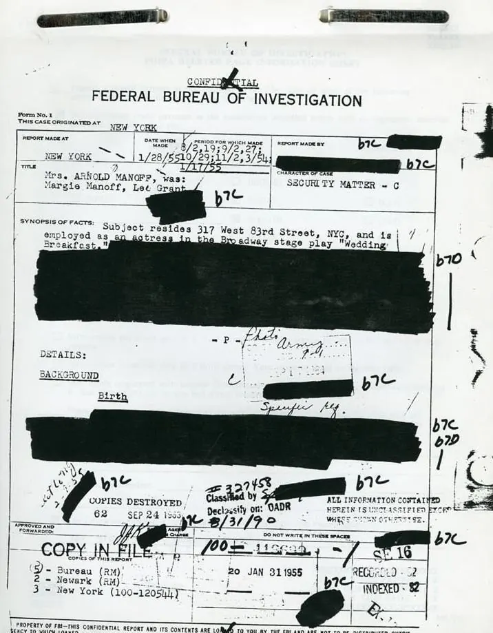
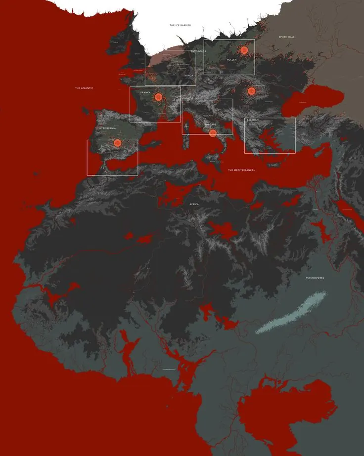

Faction_860403
주요 세력 기록서

세력/조직원본 기록 유지확장 설정 연결
주요 세력 기록서 본 문서는 Project Curse 세계관 내에서 활동하는 주요 기관, 적성 세력, 비인가 무장 조직, 연구 기업, 회수 부대, 민간 통제 조직의 역할과 관계를 정리한 세력 기록서이다. 해당 기록은 도시 이상현상, 괴이 출현, 우시노다교 의식, 레드존 확산, 피의 호수
기록 열람Search/Tag 메뉴는 제거했고, 설정글이 어떤 문서인지 알 수 있도록 원래 제목과 코드명을 함께 표시했습니다. 원본 설정글 16개는 각 Record 그룹 안에 배치했고, 확장 설정은 별도 그룹으로 연결했습니다.
주요 세력 기록서 본 문서는 Project Curse 세계관 내에서 활동하는 주요 기관, 적성 세력, 비인가 무장 조직, 연구 기업, 회수 부대, 민간 통제 조직의 역할과 관계를 정리한 세력 기록서이다. 해당 기록은 도시 이상현상, 괴이 출현, 우시노다교 의식, 레드존 확산, 피의 호수
기록 열람
인물 프로필 기록 Character Profile Archive 본 문서는 Project Curse 세계관 내 주요 인물, 특수 작전 인원, 고위험 개체화 가능 인물, 사건 관련자를 정리한 인물 기록이다 본 기록은 각 인물의 소속, 상태, 능력, 관련 사건, 위험도, 장비 정보를 포함하
기록 열람
F.H.C 극비 보안 문서 F.H.C Classified Security Document 경고 본 정보에 포함된 내용은 F.H.C 극비 분석 부서에서 독점 관리 중인 기밀 자료입니다 해당 정보에는 다수의 기밀 내용과 오컬트 위협 사례가 포함되어 있으므로, 반드시 관련 담당자를 동반하여
기록 열람
레드울프 이탈 기록 Red Wolf Defection Record 본 문서는 U.A.C 정보 수집 부서가 복구한 암호화 CCTV 영상 기록이다 해당 기록은 과거 N.H.C 1차 작전팀 : 레드울프 가 기존 지휘 체계에서 이탈하는 과정과, 이후 신디케이트 주요팀으로 재분류되는 계기가 된
기록 열람
불멸을 향해 Blood Lake Incident File 독일 본토 ██ 지역에서 이상현상 감지됨 XX 정찰 부대에 의해 최초 발견 이 문서는 독일 본토 ██ 지역에서 발생한 피의 호수 관련 이상현상과, 현장 촬영 및 통신 임무를 수행하던 유닛2의 작전 기록을 정리한 사건 파일이다 현장
기록 열람
구역 위험도 분류 문서 Zone Hazard Classification Document 기본 기록 본 문서는 U.A.C 공식 기준 문서이다.Project Curse 세계관 내 도시 및 외곽 지역에서 발생하는 이상현상, 괴이 출현, 우시노다교 의식, 혈교 의식, 타락 확산, 민간 피해 가
기록 열람
Project Curse 연표 기록 Project Curse Timeline Archive 본 문서는 Project Curse 세계관 내에서 발생한 주요 사건, 조직 창설, 이상현상 기록, 실종 사건, 연구 자료, 작전 기록을 시간 순서대로 정리한 연표 기록이다 해당 연표는 현재 공개된
기록 열람
Red Zone Anomaly & Contamination System ◆ 분류: 레드존 이상현상, 오염 지수, 시간 오염, 문 현상, 통신 오염 ▣ 중심 기관: U.A.C / N.H.C / S.I.D / F.H.C ⟐ 기능: 레드존 에서 발생하는 비정상 현상과 오염 기준을 한 문서 안
기록 열람
타락 개체 분류 보고서 Feral Entity Classification Report 현재 보시는 정보는 관계자 외 열람이 불가능한 정보입니다 이는 관련 담당자와 함께 확인해주시기 바랍니다 본 문서는 Project Curse 세계관 내에서 확인된 괴이 개체, 페럴, 타락체, 인공 괴이,
기록 열람
피의 호수 부검 기록 Blood Lake Autopsy Record U.A.C 오컬트 생명 과학 부서 녹음파일#088 19xx/xx/02 지역:아오██하라 관련 개체: 피의 호수 / Blood Lake 피해자:현장 촬영팀 - 마렌 예거트 기록 형태:부검 녹음파일 / 법의학 기록 / 생체
기록 열람
Feral , Cult & 귀환 개체 Classification ◆ 분류: 괴이 개체, 인공 괴이, 우시노다교 , 의식 집행자, 귀환자 ▣ 중심 기관: N.H.C / F.H.C / S.I.D / C.P.D ⟐ 기능: 사람처럼 보이거나 생물처럼 움직이는 위험 대상을
기록 열람
축복으로 위장된 병기 Weapon Disguised as Blessing 본 문서는 U.A.C 정보 수집 부서가 복구한 비인가 오디오 기록이다 해당 기록에는 과거 N.H.C 1차 작전팀 : 레드울프 소속이었던 웨이드 밀렌이 우시노다 의 힘을 병기화하려는 계획을 논의한 정황이 포함되어 있
기록 열람
새로운 세계를 위한 유전자 기록 Genetic Record for the New World 본 문서는 정체불명의 작성자가 남긴 비인가 유전자 연구 기록이다 해당 기록은 괴이로 변이한 생명체의 조직에서 추출된 유전 정보를 기반으로 작성된 것으로 추정되며, 괴이 유전자 디지털화, 생체 프린
기록 열람
N.H.C 현장 작전 규정, Equipment & Containment Manual ◆ 분류: N.H.C 현장 규칙, 회수 금지 기준, 장비, 시설, 차량, 봉쇄 코드 ▣ 중심 기관: N.H.C / Ash Crew / A.R.F / C.P.D / U.A.C ⟐ 기능: 레드존
기록 열람
사쿠마 유타 실종 사건 보고서 Sakuma Yuta Disappearance Case Report 주의⚠️ 본 자료는 S.I.D 오컬트 부서의 기밀 내용으로 분류되어 있으며, 열람 시 담당 관계자와 동행하여 확인해야 한다 해당 문서는 S.I.D 일본 도쿄 지부에서 관리하던 오컬트 사건
기록 열람
아마리온 회수 영상 기록 Recovered Amarion Training Footage 본 문서는 F.H.C 극비 분석 부서가 회수한 아마리온 제약 내부 사전교육 영상의 복구 기록이다 해당 영상은 표면적으로는 인류의 미래와 자원 확보를 위한 기술 교육 자료로 제작되었으나, 실제 내용은
기록 열람Project Curse 확장설정 목차 Evernote 추가 확장설정 목차 원본 설정글 뒤에 추가되는 Project Curse 확장설정 목차다. 각 확장설정은 Evernote에서 별도 노트로 확인할 수 있다. 번호 확장설정 내용 01 전체 확장 방향 장르, 분위기, 세계 구조, 핵심 주
기록 열람확장설정 01. 전체 확장 방향 장르, 분위기, 세계 구조, 핵심 주제를 정리한 기준 페이지. Project Curse는 단순한 괴이 퇴치물이 아니라, 도시 재난, 오컬트 감염, 군사 봉쇄, 강화 인간, 생체 병기 산업, 종교 의식, 기밀 연구, 정치적 은폐가 얽힌 오컬트 군사 재난 세
기록 열람확장설정 02. 주요 세력 확장 U.A.C , N.H.C , S.I.D , F.H.C , 기업, 종교 집단의 역할 정리. U.A.C / Urban Anomaly Containment 도시 이상현상 격리·통제 기관. 1986년 “ 불멸을 향해 / 피의 호수 ” 작전 이후 본격적으로 설립된
기록 열람확장설정 03. 구역 확장 일반 도시, Yellow Zone , Red Zone , Black Zone 의 구분. 일반 도시 구역 아직 공식적으로 오염 판정을 받지 않은 구역. 이상현상, 실종, 귀환자 발생이 시작되면 감시 대상으로 전환된다. Yellow Zone 초기 위험 구역. 실종
기록 열람확장설정 04. 괴이 생태계 확장 괴이 , 페럴 , Queen-Type , Superior-Type , 양산형, 인공형, 혼합형의 계통. 괴이 우시노다의 힘, 의식, 변이, 감염, 비인가 연구 등으로 발생한 비정상 생명체 전체를 의미한다. 우시노다교 의식 Blood Cult 희생 의식
기록 열람확장설정 05. 귀환자 확장 레드존 이나 블랙존 에서 돌아온 인간의 판정 체계. 귀환자 는 레드존 이나 블랙존 에서 실종된 뒤 다시 돌아온 민간인 혹은 병력이다. 기억 일부 손실 신체 오염 반응 없음으로 보일 수 있음 특정 단어, 장소, 의식 문장에
기록 열람확장설정 06. Wivermensi 확장 저주성 힘, 신체 강화, 장비, 혈무 , 파동기 의 결합체. Wivermensi / 위버멘시 는 저주성 힘, 신체 강화, 전술 장비, 혈무 , 파동기 시스템이 결합된 강화 인간 요원이다. 위버멘시 는 단순한 슈퍼솔저가 아니라, 우시노다 계열 저주
기록 열람확장설정 07. Wave Frame / 파동기 확장 저주성 파동·압력 기반 전투 시스템. Wave Frame 은 위버멘시 가 사용하는 저주성 파동·압력 기반 전투 시스템이다. 파동기 는 신체 내부에 저주성 압력을 순환시키고, 이를 근육, 뼈, 신경, 무기, 방어막 파괴에 사용하는 기술이
기록 열람확장설정 08. 혈무 / Blood Weapon 확장 피와 저주성 장벽에 반응하는 검형 병기. 혈무 는 위버멘시 , 일부 N.H.C 병사, 지휘관, 특수 작전 인원이 사용하는 저주 반응형 칼날이다. 기본 형태 평소에는 금속 칼날 칼집에 보관 피가 닿으면 붉게 변함 저주성 장벽에 반응 위
기록 열람확장설정 09. 장비 / 기술 확장 W-Coat , W-Fiber , Null Coating , 의료 복원, AI, Synthetic, 생체 병기 . W-Coat 위버멘시 가 착용하는 전투 코트형 장비. 오염 저항 탄도 방어 혈무 하네스 장착 신체 강화 보조 Null Coating 적용
기록 열람확장설정 10. 시설 / 인프라 확장 본부, 전진기지, Black Site, 이동식 요새, 위성 관측망, 격리 연구소. U.A.C 본부 이상현상 감시 기록 검열 작전 승인 연구 데이터 관리 레드존 확산 지도 관리 N.H.C 전진기지 병력 재보급 장비 정비 부상자 후송 오염 장비 임시 보
기록 열람확장설정 11. 인공 괴이 / 유전자 기록 확장 괴이 유전자 디지털화, 생체 프린팅, 강제 진화. 괴이 유전자 디지털화 괴이 생체 정보를 데이터화하여 저장하는 기술. 괴이 구조 분석 변이 패턴 예측 생체 병기 설계 인공 조직 제작 불멸 연구 생체 프린팅 괴이 유전자 데이터를 기반으로 조
기록 열람확장설정 12. 주요 사건 확장 기원 사건, 전쟁, 붕괴, 재조사, Queen-Type 등장, Young Soldier 손실 작전. 1986년 “ 불멸을 향해 / 피의 호수 ” 작전 Project Curse 세계관의 핵심 기원 사건. U.A.C 설립 계기 피의 호수 기록 발생 불멸 연구
기록 열람확장설정 13. 전투 체계 확장 N.H.C , Young Soldier , Wivermensi , Redwolf 전투원의 차이. 일반 N.H.C 병력 장비 소총 방탄복 헬멧 방독 장비 오염 검사 키트 일부 혈무 붉은 완장 혹은 구역 표식 역할 봉쇄선 유지 민간인 호위 페럴 진압 전진기지
기록 열람확장설정 14. 문서 형식 확장 세력, 인물, 괴이 , 사건, 작전 규정 문서의 형태. 세력 문서 기관 브리핑 형식. 세력명 정식 명칭 설립 배경 권한 범위 주요 인물 협력 세력 적대 세력 위험도 관련 사건 인물 문서 프로필 카드 형식. 이름 코드네임 소속 상태 역할 장비 능력 관련 사
기록 열람확장설정 15. 추가 확장 가능 방향 정치, 사회, 법률, 경제, 국제 대응, 최상위 존재까지 넓히는 확장안. 중앙 재난 의회 / 비상통제위원회 U.A.C , N.H.C , S.I.D , F.H.C , 군부, 기업 세력, 지역 정부가 얽힌 상위 정치 구조. 레드존 선포 승인 블랙존 폐쇄
기록 열람확장설정 16. 핵심 키워드 묶음 세력, 구역, 병기, 강화 인간, 괴이 , 사회, 정치, 미확인 키워드 정리. 계열 키워드 기관 U.A.C , N.H.C , S.I.D , A.R.F , C.P.D , F.H.C 구역 Yellow Zone , Red Zone , Black Zone 병기
기록 열람확장설정 17. 최종 정리 Project Curse 확장설정의 핵심 문장. Project Curse는 괴이 와 인간이 싸우는 세계가 아니라, 괴이 를 연구하고, 이용하고, 은폐하고, 무기화하다가 결국 도시와 인간성이 함께 무너지는 세계관이다. U.A.C 는 통제한다. N.H.C 는 죽으
기록 열람